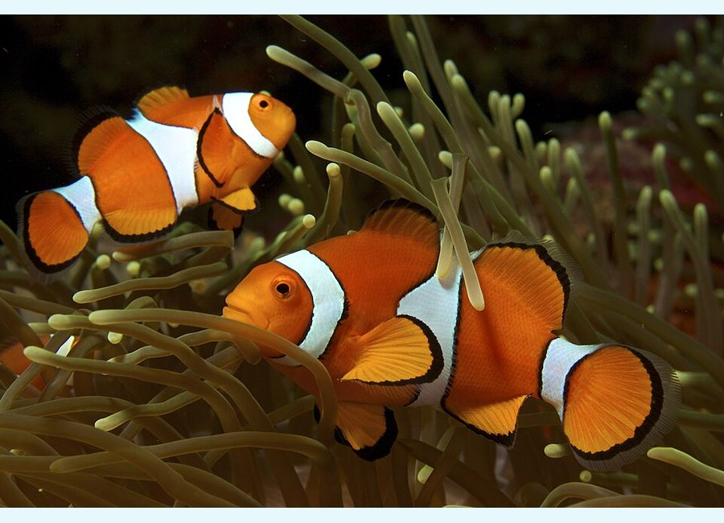

Fish
Clownfish pair
Amphiprion ocellaris (verify exact species)
Natural range / location: Indo-Pacific reefs; your pair hosts the Duncan coral and regularly lays eggs.
- Territorial pair-bonding damselfish; spawning is a sign of comfort and routine.
- Can host anemones, but also often adopts corals such as Duncan, hammer, or leather corals.
- Watch the hosted coral for irritation if the pair becomes too rough.
Your tank: Your tank note: breeding pair; currently using the Duncan as their host.